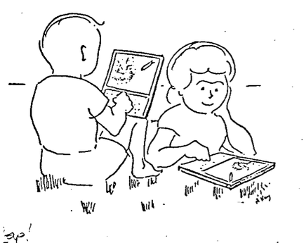
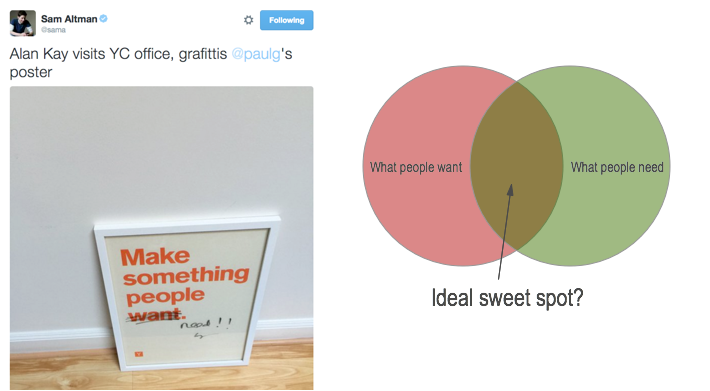

Computing as envisioned circa 1960:
"The only surviving computing system paradigm seen by MIT students and faculty was that of a very large International Business Machine in a tightly sealed Computation Center: the computer not as a tool, but as a demigod." – Wesley Clark.
 Computing as envisioned in Alan Kay's "A Personal Computer for Children of All Ages" (1972, what I'll call “the Dynabook paper”):
Many of the ideas in the Dynabook paper now appear commonplace, even banal.
That's because those ideas won.
At the time, this kind of thinking was a big change in perspective from computers-as-demigods.
The Dynabook paper (and related work) was posing a fundamental new question: what might personal computing for everyone be?
By facing squarely up to this (and some related) questions, PARC invented much of the foundation for modern personal computing.
Slides by Michael Nielsen, for a small-group discussion with people from the Recurse Center, December 2015. The slides are brief, very rough and incomplete working notes on a tiny, tiny slice of work related to the Dynabook.
We're going to wallow in some of the ideas around the Dynabook. Not a collection of facts, not about mastering particular technologies and systems. Rather, about powerful, generative questions and principles and intuitions.
Little point in memorizing these, or treating them as Gospel. Better to engage deeply with them, fight back with our own ideas, mash up and collide with other powerful ideas, use as a crucible for creation. My belief is that we can go a lot, lot further.
As Kay puts it: The Real Computer Revolution Hasn't Happened Yet.
To that end: this is a conversation, not a monologue. Ask questions, point out connections, argue with me, Kay, and everyone else. Riff, riff, riff.
I'll certainly be grinding some axes
There is no necessity to “get through everything”. The goal is to marinate in ideas, and to distill out a changed understanding, not to make it to some notional endpoint.
A Personal Computer for Children of All Ages (Kay, 1972)
Personal Computing (Kay, 1975)
Microelectronics and the Personal Computer (Kay, 1977)
personal dynamic media (Kay and Goldberg, 1977)
Computers, Networks and Education (Kay, 1991)
The Early History of Smalltalk (Kay, 1993)
The Real Computer Revolution Hasn't Happened Yet (Kay, 2007)
A distinction implicit in much of Kay's discussion is between building tools versus building a medium. For instance:
What then is a personal computer? One would hope that it would be both a medium for containing and expressing arbitrary symbolic notions, and also a collection of useful tools for manipulating these structures, with ways to add new tools to the repertoire.
There's a useful distinction here.
Tools solve very specific problems.
Cut-and-paste is a tool. The lassoo is a tool. Even something like changing the font size is a tool.
A medium, by contrast, is a platform for some broad class of creative expression. You can imagine carrying out a meaningful creative project within such a medium.
Photoshop is a medium. Microsoft Word is a medium. The web browser is a medium.
The distinguishing question seems to be: can you imagine using this program to build a significant creative project? If yes, it's a medium. If no, it's a tool.
Tools often have specific inputs which map to specific outputs. But media typically have generic inputs which are transformed by the user to imagined outputs.
Tools are tremendously important. But media are the overall environment we use to think and create. And so, to me, they hold more overall interest.
Kay: an environment which... allows [a child] to gain a model of himself is tremendously important.
What does Kay mean to gain a model of oneself?
Possibly Kay is talking about experiences which change our self-perception:
E.g. "When I played tennis as a teenager I learnt that I enjoyed being on a team more than working solo." [or vice versa, it doesn't matter: the crucial point is a more developed understanding of self]
A more sophisticated understanding of self may be: "I have the following skills / preferences / values, and that helps me get more out of being on a team than being solo."
To what extent does this matter? Why does it matter or not matter? Does it matter for all people, not just children?
To what extent does existing software help people develop a model of themselves?
"I'm a Wikipedian." "I'm a blogger." "I'm a designer who uses Illustrator." "I'm a [insert identity]." These are sometimes strongly associated with developing specific traits that people are aware of having, and which they have theories about.
Flipside: certain business models rely on short-term user engagement, but have negative effects on the user's long-term welfare. The result may be self-loathing, an alienation from and diminished model of self.
Kay: "We feel that a child is a “verb” rather than a “noun&rdquo"
This point of view is in opposition to the point of view taken by educators (or by traditional media).
We “educate” people, that is, education is something which someone well-informed “does to” someone who is ignorant. Those people are passive receptors, things that are operated on by teachers.
Another point of view is that people educate themselves. The most anyone can do is create enabling circumstances.
Even without taking a point of view on this, an interesting thing about personal computers is that they can provide a structured, responsive environment for individual exploration. That's difficult in traditional classrooms. And so it creates an interesting possibility.
Kay: For most of recorded history the interactions of humans with their media have been primarily nonconversational and passive... A mathematical formulation-which may symbolize the essence of an entire universe-once put down on paper, remains static and requires the reader to expand its possibilities.
Consider E = mc2.
These are Unicode characters.
On paper, characters are lifeless entities. We've copied that.
/